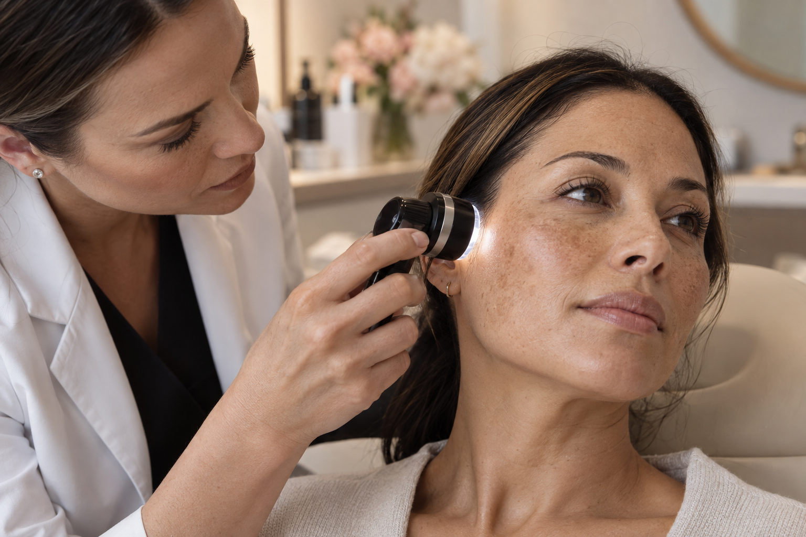

Uniformidade
Estratégias para auxiliar na redução da aparência das manchas.
Saúde e uniformidade
Protocolos individualizados para auxiliar no controle das manchas, fortalecer a rotina de cuidado e melhorar textura, uniformidade e viço.

Imagem demonstrativa — substituir pela foto oficial da profissionalO tratamento
O melasma é uma condição crônica caracterizada por manchas, principalmente em áreas expostas do rosto. Seu controle costuma exigir uma abordagem contínua e individualizada.
O protocolo pode combinar cuidados em consultório, rotina domiciliar e fotoproteção. A escolha depende da avaliação da pele, do histórico e dos fatores que desencadeiam ou agravam as manchas.
Objetivos do cuidado
Estratégias para auxiliar na redução da aparência das manchas.
Cuidado pensado para preservar e fortalecer a saúde da pele.
Plano contínuo para ajudar a reduzir recidivas e oscilações.
Como funciona
Análise do tipo de pele, histórico e características das manchas.
Orientação sobre exposição solar, calor, rotina e outros fatores.
Definição dos cuidados em consultório e, quando indicado, em casa.
Acompanhamento e ajustes de acordo com a resposta da pele.
Cuidado contínuo
Agende uma avaliação para receber um plano adequado às necessidades da sua pele.
Conversar pelo WhatsApp ↗Melasma é uma condição crônica. A resposta aos cuidados e os resultados variam individualmente.